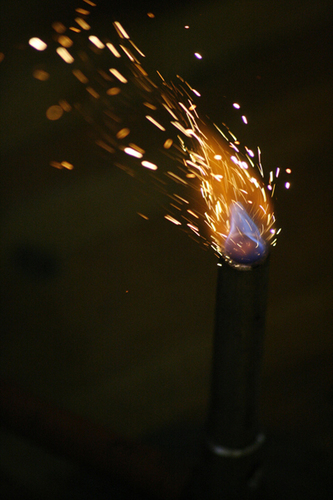
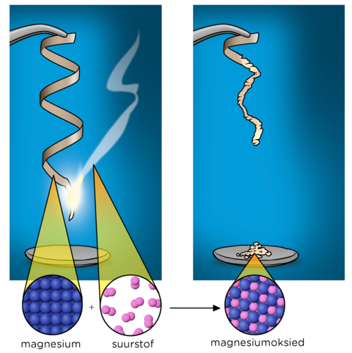

In hierdie hoofstuk sal leerders weer die reaksies van geselekteerde metale met suurstof, wat as voorbeelde in die vorige hoofstuk gebruik is, teëkom. In hierdie hoofstuk sal daar egter 'n groter fokus wees op die werklike reaksies - hierdie behoort in die klas gedemonstreer te word - en die gemeenskaplike faktore tussen hulle. Weereens sal die skryf van chemiese reaksies opgebou word deur 'n proses waarin begin word met 'n woordvergelyking (makroskopiese voorstelling), wat dan vorder na 'n prentjievergelyking (submikroskopiese vergelyking), en dan by die chemiese vergelyking (simboliese vergelyking) eindig.
Die inhoud is ook in 'n effens anderse volgorde as KABV, aangesien voorbeeld-reaksies eers bekyk word, en die algemene reaksie van metale met suurstof eers daarna verduidelik word, wanneer leerders alreeds die chemiese vergelykings voorbeelde gesien het.
3.1 Die reaksie van yster met suurstof (1 uur)
Take
Vaardighede
Aanbeveling
Aktiwiteit: Drie verskillende vlakke van interpretasie in wetenskap
Sortering en klassifisering, interpretasie, identifisering
Opsioneel (Hersiening)
Aktiwiteit: Die reaksie van yster met suurstof
Demonstrasie van staalwol wat brand, waarneming, aantekening, kommunikering, beskrywing
Deur KABV voorgestel
3.2 Die reaksie van magnesium met suurstof (1 uur)
Take
Vaardighede
Aanbeveling
Aktiwiteit: Die reaksie van magnesium met suurstof
Demonstrasie van magnesium wat brand, waarneming, aantekening, kommunikering, beskrywing
Deur KABV voorgestel
3.3 Die algemene reaksie van metale met suurstof (0.5 uur)
(Vrae in die teks)
3.4 Die vorming van roes (1.5 uur)
Take
Vaardighede
Aanbeveling
Aktiwiteit: Die reaksie tussen yster en suurstof in lug
Wat gebeur wanneer 'n metaal met suurstof reageer?
Wat word die produk genoem?
Hoe kan ons die algemene reaksie tussen 'n metaal en suurstof voorstel?
Wat is 'n verbrandingsreaksie?
Wat is roes en hoe vorm dit?
Hoe kan yster roesbestand gemaak word?
In die vorige hoofstuk het ons geleer hoe om gebalanseerde vergelykings te skryf. Die drie voorbeelde wat ons geleer het was:
magnesium + suurstof → magnesiumoksied
yster + suurstof → ysteroksied
koper + suurstof → koperoksied
Uit watter groepe kom magnesium, yster en koper?
Magnesium is uit Groep 2, yster is uit Groep 8, en koper is uit Groep 11. Dit is belangrik, want elemente in dieselfde groep sal soortgelyk optree.
In hierdie reaksies is die elemente wat met suurstof reageer almal metale. As jy nie hiervan oortuig is nie, soek hulle op in die Periodieke Tabel onder op die voorkant van jou boek. Kan jy sien dat hulle almal in die gebied, wat deur die metale beset word, gevind word? Waar is metale op die Periodieke Tabel geleë?
Aan die linkerkant.
Die name van die produkte van die drie reaksies hierbo het iets in gemeen. Skryf die name neer. Kan jy sien wat hulle in gemeen het?
Die produkte is: magnesiumoksied, ysteroksied, koperoksied. Hulle het almal 'oksied' in hulle naam.
Die produkte is almal metaaloksiede. Wat presies is metaaloksiede? Soos ons later sal sien wanneer ons die diagramme teken en formules skryf om hierdie reaksies voor te stel, is hulle verbindings waarin die metaal met suurstof in 'n vaste verhouding gekombineer is.
Die metale sal soortgelyk reageer met die ander elemente in dieselfde groep as suurstof (Groep 16).
In hierdie hoofstuk gaan ons na twee van die reaksies wat vantevore gewys is in groter detail kyk. Onthou dat hulle nie die enigste reaksies van metale met suurstof is nie, maar dat hulle slegs die reaksies is wat ons as voorbeelde gekies het.
Eerstens sal ons die eintlike reaksies waarneem. Jou onderwyser sal die demonstrasie doen, terwyl jy jou waarnemings sal maak. Daarna sal ons meer omtrent hierdie reaksies skryf deur wetenskaplike taal te gebruik wanneer ons die reaksievergelykings vir elkeen skryf. Voordat ons begin volg hier nou eers 'n herinnering aan iets wat ons in Hoofstuk 1 bespreek het.
Drie verskillende vlakke van interpretasie in wetenskap
In die eerste hoofstuk van Gr. 9 Materie en Materiale, het ons geleer dat wetenskaplikes chemiese reaksies op drie verskillende vlakke interpreteer. Hierdie vlakke is:
die makroskopiese vlak;
die submikroskopiese vlak; en
die simboliese vlak.
Bevestig of jy nog onthou waarna elke vlak verwys, deur die volgende tabel te voltooi.
Wanneer ons die volgende doen:
Ons werk op hierdie vlak: (Makroskopies/ submikroskopies/ simbolies)
Neem werklike reaksies waar (sien, hoor, ruik, voel, proe).
Beskryf in woorde wat ons sien.
Verbeel jou die beweging van deeltjies tydens reaksies.
Teken prentjies van deeltjies in stowwe.
Skryf chemiese formules.
Skryf reaksievergelykings.
Wanneer ons die volgende doen:
Ons werk op hierdie vlak: (Makroskopies/submikroskopies/simbolies)
Neem werklike reaksies waar (sien, hoor, ruik, voel, proe).
Beskryf in woorde wat ons sien.
Makroskopies
Verbeel jou die beweging van deeltjies tydens reaksies.
Teken prentjies van deeltjies in stowwe.
Submikroskopies
Skryf chemiese formules.
Skryf reaksievergelykings.
Simbolies
Jou onderwyser sal binnekort twee reaksies demonstreer terwyl jy waarnemings maak. Op watter van die drie vlakke sal jy dan besig wees?
Die makroskopiese vlak.
Die doel van hierdie demonstrasies is om jou 'n kans te gee om makroskopiese waarnemings van die chemiese veranderinge wat tydens reaksies plaasvind te maak. Hierdie hoofstuk sal jou ook help om daardie makroskopiese waarnemings in verband te bring met prentjies en vergelykings wat jy in die vorige hoofstuk leer skryf het.
Die reaksie van yster met suurstof
verbranding
Ons gaan kyk hoe yster met suurstof reageer. In sommige gevalle mag jy staalwol vir hierdie eksperimente gebruik. Weet jy wat staalwol is? Dit is draadwol wat van baie dun staaldraad gemaak is. Staal is 'n allooi wat hoofsaaklik uit yster bestaan. Dus wanneer ons kyk na hoe staalwol in suurstof brand, kyk ons eintlik na hoe yster met suurstof reageer.
'n Metaalallooi is 'n vaste stof mengsel van twee of meer verskillende elemente. Voorbeelde is staal en brons.
Staalwol wat in die rondte draai sorg vir interessante foto's soos die yster in suurstof brand en oranje vonke maak. http://www.flickr.com/photos/rockandrollfreak/7697586652/ Ystervylsels lyk soos klein vonke as hulle in die blou vlam van 'n Bunsenbrander brand.
Hier kan jy kan 'n video van staalwol wat brand sien:bit.ly/1cYPyz7
Jou onderwyser sal 'n demonstrasie uitvoer waarin yster in lug verbrand word. Wanneer 'n stof in lug brand, word die reaksie 'n verbrandingsreaksie genoem. Wanneer 'n stof in lug brand, reageer dit eintlik met suurstof.
Die reaksie van yster met suurstof
As gevolg van die gevare wat by die brand van metale betrokke is, word dit aanbeveel dat die onderwyser hierdie reaksie aan die leerders demonstreer.
Veiligheidsmaatreëls om te handhaaf tydens demonstrasies:
Dra veiligheidsbrille en 'n laboratoriumjas.
Wees versigtig met die brand van staalwol, aangesien vonke vrygestel mag word. Leerders moet gewaarsku word om nie te naby te staan gedurende die demonstrasie nie.
Plaas 'n skoon beker of horlosieglas onder die demonstrasie om enige metaaloksied wat tydens die reaksie vorm te vang. Studente kan die reaksieproduk na die tyd ondersoek en hul eie waarnemings formuleer.
MATERIALE:
Bunsenbrander of spiritus brander
vuurhoutjies
veiligheidsbrille
staalwol
tang
INSTRUKSIES:
Jou onderwyser sal die verbranding van yster in suurstof (wat in lug teenwoording is) demonstreer.
Jy moet versigtig waarnemings maak tydens die demonstrasie en dit neerskryf in die spasies hieronder verskaf. 'n Paar vrae is verskaf om jou te help.
VRAE:
In hierdie demonstrasie het ons staalwol gebruik, maar waarvan is staalwol oorwegend gemaak?
Staalwol is 'n allooi wat oorwegend van yster gemaak is. NOTA: Die ander elemente in staal sluit in koolstof, mangaan, fosfor, swael, silikon, en spore van suurstof, stikstof en aluminium. Leerders het nie nodig om die name van die ander elemente in staalwol te ken nie.
Kyk na die metaal voordat dit verbrand word. Beskryf hoe dit lyk.
Leerders se waarnemings mag die volgende insluit: Die staalwol bestaan uit dun ysterdraadjies. Dit lyk soos hare wat van metaal gemaak is. Afhangende van die toestand van die staalwol, mag leerders dit beskryf as blink of vaal grys, metallies, of selfs geroes. Moedig kreatiewe beskrywings aan.
Kan jy die suurstof waarmee die metaal sal reageer sien? Kan jy dit beskryf?
Suurstofgas kan nie gesien of direk waargeneem word nie, en dus kan dit nie beskryf word nie.
Wat neem jy tydens die reaksie waar? Beskryf enigiets wat jy sien, hoor, of ruik.
Leerders mag die staalwol sien brand met helder oranje vonke wat val. Hulle mag selfs 'n bietjie rook waarneem.
Leerders mag die knetterende klank van die staalwol wat brand hoor.
Leerders mag 'n metaliese reuk in die lug oplet.
Leerders mag die hitte van die verbrandingsreaksie ervaar.
Hoe lyk die produk van hierdie reaksie? Beskryf dit in soveel detail as moontlik.
Die produk is 'n rooierige-bruin, krummelrige vaste stof.
Ysteroksied word as pigmente in verwe gebruik, aangesien dit voorkom in 'n reeks van bruin en rooi skakerings.
As jy dink dat die reaksie van yster wat in suurstof brand skouspelagtig is, sal die volgende demonstrasie jou verbyster!
Die reaksie van magnesium met suurstof
kameraflits
ontbrand
Jou onderwyser sal 'n demonstrasie doen van magnesium wat in lug brand.
Magnesium brand met 'n helder wit vlam.
'n Video wat magnesium wat in suurstof brand wysbit.ly/14nA93I
Die reaksie van magnesium met suurstof
As gevolg van die gevare wat betrokke is by die verbranding van metale, word dit aanbeveel dat die onderwyser die reaksie aan die leerders demonstreer.
Instruksies:
Dra veiligheidsbrille en 'n laboratoriumjas.
Waarsku leerders om nie direk na die intense wit vlam wat brandende magnesium veroorsaak te kyk nie.
Plaas 'n skoon beker of horlosieglas onder die demonstrasie om enige metaaloksied te vang wat tydens die reaksie vorm. Studente kan die reaksieproduk na die tyd ondersoek om hul eie waarnemings te formuleer.
Dit mag 'n goeie idee wees om die produk van die magnesiumverbrandingsreaksie te behou vir 'n opvolg-eksperiment later in die hoofstuk Reaksie van sure met metaaloksiede.
Die produk kan ook op hierdie stadium in water ingemeng word en getoets word om te sien of dit 'n suur of basis is.
MATERIALE:
Bunsenbrander of spiritus brander
vuurhoutjies
veiligheidsbrille
magnesiumlint
tang
horlosieglas of beker
INSTRUKSIES:
Jou onderwyser sal die verbranding van magnesium in suurstof demonstreer.
Jy moet versigtige waarnemings tydens die demonstrasie maak en hulle in die spasies wat hieronder verskaf is neerskryf.
VRAE:
Beskryf die fisiese vorm van die metaal in hierdie eksperiment.
Die magnesium is in die vorm van 'magnesiumlint'.
Wat noem ons reaksies waarin 'n stof in lug brand?
Verbrandingsreaksies
Hoe sal jy die fisiese voorkoms of kleur van die metaal beskryf voordat dit verbrand word?
Leerders se waarnemings mag die volgende insluit: Die magnesiumlint lyk soos 'n dun strook metaal. Dit lyk soos metaalband. Afhangende van die toestand van die lint mag leerders dit beskryf as blink, donkergrys, swart, metallies, of selfs aangeslaan. Moedig kreatiewe beskrywings aan.
Kan jy die suurstof sien waarmee die magnesium gaan reageer? Kan jy dit beskryf?
Suurstofgas kan nie gesien of direk waargeneem word nie, en dus kan dit nie beskryf word nie.
Wat neem jy tydens die reaksie waar? Beskryf enigiets wat jy sien, hoor, of ruik.
Leerders mag die magnesium met 'n verblindende wit lig sien brand. Hulle mag ook rook waarneem.
Leerders mag 'n knettering of sissing hoor soos die magnesium brand.
Leerders mag 'n warm, metalliese reuk in die lug waarneem.
Leerders mag die hitte van die verbrandingsreaksie ervaar.
Hoe lyk die produk van hierdie reaksie? Beskryf dit in soveel detail as moontlik.
Die produk is 'n sagte, wit, poeierige vaste stof.
Magnesium is in Groep 2 in die Periodieke Tabel. Kan jy onthou dat ons gesê het dat elemente wat in dieselfde groep is soortgelyk sal optree. Dit beteken dat hulle op 'n soortgelyke wyse sal reageer. Ons het bestudeer hoe magnesium met suurstof reageer, maar kalsium, byvoorbeeld, sal op 'n soortgelyke wyse optree. Jy kan na die video in die besoek webskakel kyk om dit te bevestig.
Video wat kalsium wys wat met suurstof reageerbit.ly/19n3u7c
Die volgende diagram kombineer die makroskopiese, submikroskopiese en simboliese verteenwoordigings van die reaksie wat jy nou net waargeneem het.

Om 'n foto in die donker te neem, het ons 'n kameraflits nodig. Deesdae het meeste kameras 'n ingeboude flits. Die eerste flitse het egter met flitspoeier, wat magnesiumkorrels bevat, het gewerk. Hulle moes met die hand aan die brand gesteek word, en het slegs vir 'n kort tyd baie helder gebrand.
Noudat ons makroskopiese waarnemings van die twee reaksies gemaak het, is ons gereed om hierdie reaksies in wetenskaplike taal te skryf.
Die algemene reaksie van metale met suurstof
woordvergelyking
prentjievergelyking
chemiese vergelyking
reaktante
produk
metaaloksied
Laat ons begin deur woordvergelykings te skryf vir die twee reaksies wat ons pas uitgevoer het. Woordvergelykings is dikwels makliker as prentjievergelykings of chemiese vergelykings, en dus is hulle 'n goeie beginpunt wanneer ons reaksies wil neerskryf.
Skryf die woordvergelyking vir die reaksie tussen yster en suurstof en vir die reaksie tussen magnesium en suurstof neer.
Die woordvergelykings is:
yster + suurstof → ysteroksied
magnesium + suurstof → magnesiumoksied
Hierdie kan op die bord geskryf word.
Die woordvergelyking
Ons kan 'n algemene woordvergelyking skryf vir reaksies waarin 'n metaal met suurstof reageer:
metaal + suurstof → metaaloksied
Wanneer ons woorde gebruik om 'n reaksie te beskryf, werk ons steeds op die makroskopiese vlak. Volgende gaan ons ons woordvergelyking na 'n prentjievergelyking vertaal.
Die prentjievergelyking
Wanneer ons 'n chemiese reaksie voorstel as 'n deeltjiediagram, soos byvoorbeeld in die prentjievergelyking hieronder, werk ons op die submikroskopiese vlak.
Kan jy die reaktante in die bostaande vergelyking identifiseer? Die atome in pers aangedui is magnesium, en dié in rooi is suurstof. Skryf die naam en chemiese formule van die produk van hierdie reaksie neer.
Die produk is magnesiumoksied (MgO)
Die prent is nie dieselfde vir alle reaksies van metale met suurstof nie.
Die chemiese vergelyking
Ons kan verder gaan en die prentjievergelyking vir die reaksie tussen magnesium en suurstof na 'n chemiese vergelyking omskakel:
2 Mg + O2 → 2 MgO
Aangesien die chemiese vergelyking uit simbole bestaan, kan ons dit beskou as 'n simboliese vergelyking.
Kan jy onthou wat die getalle voor die formules in die chemiese vergelyking genoem word? Kan jy onthou wat die getalle binne-in 'n chemiese formule genoem word?
Koëffisiënte en onderskrifte, onderskeidelik.
Soos ons genoem het, sal metale in dieselfde groep altyd op dieselfde wyse as mekaar met suurstof reageer. Dus sal kalsium op dieselfde wyse as magnesium met suurstof reageer. Die chemiese reaksies toon die ooreenkomste. Die chemiese vergelyking vir die reaksie tussen kalsium en suurstof is:
2 Ca + O2 → 2 CaO
Wat word die produk van hierdie reaksie genoem?
Kalsiumoksied.
Uit watter groep kom kalsium en magnesium?
Groep 2.
'n Metaaloksied het die algemene formule MO of M2O. In hierdie formule verteenwoordig M 'n metaalatoom en O verteenwoordig suurstof. Ons kan dus sê dat metale van Groep 2 met suurstof sal reageer volgens die volgende algemene vergelyking, waar M 'n Groep 2 metaal verteenwoordig:
2 M + O2 → 2 MO
Metaaloksiede van die tipes M2O3 en MO2 kom ook voor, maar hier sal ons ons bespreking tot die eerste twee tipes beperk.
Hier is twee eenvoudige reëls vir jou om te onthou om te bepaal of MO of M2O die korrekte formule is:
Hierdie is 'n voorgestelde manier om leerders te help om formules te skryf. Sodra leerders in Gr.10-12 van valensies geleer het, sal hulle daartoe in staat wees om hierdie inligting te gebruik om die formules van verbindings neer te skryf. Vir nou is dit egter voldoende.
Metaaloksiede uit Groep 1 op die Periodieke Tabel sal die formule M2O hê.
Kan jy twee voorbeelde neerskryf? Kyk na die Periodieke Tabel voor in die boek, kies enige twee metale vanuit Groep 1, en skryf hulle formules neer deur hierdie reël te gebruik.
Enige twee van die volgende: Li2O, Na2O, K2O, Rb2O, Cs2O
Metaaloksiede uit Groep 2 sal die formule MO hê.
Kan jy 2 voorbeelde neerskryf?
Enige twee van die volgende: BeO, MgO, CaO, SeO, BaO
Groep 1 metale word na verwys as die Alkalimetale en Groep 2 metale word na verwys as die Alkali-aardmetale.
Yster is uit Groep 8. Hier is die prentjievergelyking van die reaksie tussen yster en suurstof (yster is groen voorgestel en suurstof rooi).
Skryf 'n chemiese vergelyking en woordvergelyking vir hierdie reaksie onder die prentjievergelyking neer.
Leerders behoort die volgende neer te skryf in lyn met hul onderskeie prentjies in bostaande diagram:
yster + suurstof → ysteroksied
4 Fe + 3 O2 → 2 Fe2O3
In die volgende afdeling gaan ons terugkeer na die makroskopiese wêreld om nog 'n voorbeeld van die reaksie tussen yster en suurstof te sien waarmee jy baie vertroud behoort te wees - die vorming van roes.
Die vorming van roes
roes
korrosie
korrosief
roesbestand
staal
Weet jy wat roes is? Die prente hieronder sal 'n paar leidrade verskaf.
Hier is 'n voorgestelde aktiwiteit om te wys hoe roes vorm. Hierdie word nie deur KABV vereis nie. Dit kan as 'n demonstrasie opgestel word. Hierdie reaksie kan dan vergelyk word met die een wat vantevore gedoen is, waar yster in suurstof in 'n verbrandingsreaksie gebrand is.
Hierdie eksperiment benodig 'n plek waar dit vir twee of drie dae ongestoord gelaat kan word. Dit mag die moeite werd wees om hierdie eksperiment aan die begin van hierdie afdeling op te stel. Neem kennis: die proefbuis mag moeilik wees om aan die einde van die eksperiment skoon te maak.
MATERIALE:
proefbuis
klamp
kolfstaander
bakkie
ystervylsels
water
INSTRUKSIES:
Spoel 'n proefbuis met water uit om die binnekant nat te maak.
Sprinkel versigtig 'n spatula ystervylsels om die kante van die proefbuis.
Keer die proefbuis om in 'n bakkie met water. Gebruik 'n klamp wat vas is aan 'n kolfstaander om die proefbuis in plek te hou.
Die watervlak moet tydens die drie dae altyd bo die oop kant van die proefbuis bly.
Hier is 'n eenvoudige diagram wat die eksperimentele opstelling met die klamp wat die proefbuis regop hou, wys.
VRAE:
Hoe lyk die ystervylsels aan die begin van die eksperiment?
Hulle is 'n silwerige kleur.
Wat is die reaktante in hierdie eksperiment?
Yster en suurstof (en water).
Is daar iets teenwoordig wat die reaksie aanhelp of versnel?
Die water.
Hoe lyk die produk aan die einde van die reaksie?
Dit is 'n bruinerige rooi kleur.
Roes is 'n woord wat 'n skilferige, korsagtige, rooibruin produk wat op yster vorm wanneer dit met suurstof in die lug reageer, beskryf.
Toe jou onderwyser vroeër die yster gebrand het, het dit vinnig met suurstof gereageer om ysteroksied te vorm. Hier is 'n prentjie van ysteroksied om jou te herinner hoe dit lyk.
'n Yysteroksied voorbeeld.
Roes is 'n vorm van ysteroksied.
Wanneer yster blootgestel word aan suurstof in die lug vind 'n soortgelyke reaksie plaas, maar net baie stadiger. Die yster word geleidelik weggevreet soos dit stadig met die suurstof reageer.
Roes is eintlik 'n mengsel van verskillende oksiede van yster, maar die Fe2O3 van ons vroeëre voorbeeld is 'n belangrike komponent daarvan. Die roes van yster is eintlik 'n goeie voorbeeld van die proses van korrosie.
Herinner leerders aan waar elders hulle vantevore in Materie en Materiale gehoor het dat die term 'korrosief' gebruik word. Dit was gebruik om sterk sure en basisse te beskryf waaraan leerders vir die eerste keer in Gr. 7 Materie en Materiale bekendgestel is, en waarna ons weer later in hierdie termyn sal kyk.
Roes is geneig om vinniger naby die see plaas te vind. Hier is daar nie net klein druppels nie, maar hierdie druppels het ook sout in hulle wat hulle selfs meer korrosief maak. Roes gebeur ook vinniger in die teenwoordigheid van sure. In laboratoriums of fabrieke waar sure gebruik of gestoor word, is die lug ook baie korrosief. Wanneer die lug in 'n spesifieke area 'n mengsel van vog gemeng met suur of sout bevat, verwys ons na die area as 'n plek met 'n korrosiewe klimaat.
As jy in 'n korrosiewe klimaat bly, byvoorbeeld naby die see, is dit dikwels beter om die vensterrame en deure van jou huis van hout in plaas van van yster of staal te maak, omdat hout nie roes nie! Baie mense gebruik ook aluminium hiervoor, aangesien dit ook nie roes nie.
Die probleem met roes
Roes is 'n natuurlike proses, waarvan die uitkoms baie mooi kan wees.
Yster en roes (ysteroksied) is heeltemal verskillende materiale, en het daarom heeltemal verskillende eienskappe.
Waarom is roes 'n probleem?
Hierdie skakel in met wat leerders in vorige grade oor die eienskappe van materiale geleer het.
Kom ons verbeel ons dat ons iets, wat uit yster gemaak is, vervaardig het. Watter eienskappe van yster wil ons benut?
Aangesien yster 'n metaal is, is dit hard, sterk en buigbaar.
Watter voorwerpe, waar hierdie eienskappe wenslik is, dink jy kan ons uit yster maak?
Gereedskap, slotte, skarniere, skroewe en spykers, motorhuisdeure...die lys van voorwerpe is amper eindeloos!
Wanneer 'n voorwerp uit yster gemaak is, mag ons dit teen roes wil beskerm om te verhoed dat dit daardie wenslike eienskappe verloor. Dink jy dat die geroeste ketting en deurskarnier in die volgende foto's so sterk en bruikbaar sal wees as toe hulle nuut was? Hoekom nie?
Nee, hulle sal nie meer so sterk wees nie. Roes is 'n verskillende verbinding as wat yster as 'n element is, en dus het dit nie dieselfde eienskappe nie. Dit begin om ystervoorwerpe te verswak.
Jy mag in vorige grade geleer het dat yster versterk en meer roesbestand gemaak kan word deur ander elemente daarmee saam te meng om dit in 'n staal te omskep.
Staal word gebruik in die bou van geboue omdat dit sterk is. Staal is egter nie heeltemal roesbestand nie, en moet ook teen roes beskerm word, veral in vogtige en korrosiewe klimate.
In die volgende afdeling sal ons leer van verskillende maniere waarop yster en staal teen roes beskerm kan word.
Maniere om roes te verhoed
bots
versperring
blootgestel
poreus
penetreer
verchroomde metaal
gegalvaniseerder metaal
galvaniseer
oksideer
Roes vorm op die oppervlak van 'n yster- of staalvoorwerp wanneer daardie oppervlak in aanraking met suurstof kom. Die suurstofmolekule bots met die ysteratome op die oppervlak van die voorwerp en tesame reageer hulle om ysteroksied te vorm. Wat sal ons moet doen as ons wou verhoed dat dit gebeur?
Ons sal iets tussen die suurstof en yster moet plaas sodat hulle nie in aanraking met mekaar is nie.
Verf vorm 'n versperring teen roes
As ons wou verhoed dat die ysteratome en suurstofmolekule kontak maak, sal ons 'n verperring tussen hulle moet plaas. Dit is presies wat ons doen as ons 'n ysteroppervlak verf om dit teen roes te beskerm.
Verf is egter nie die heel beste roesversperring nie. As die verfoppervlak gekrap word, of as dit begin afdop, sal die metaal weer aan die lug blootgestel wees en kan roes steeds vorm.
Ander metale as versperrings teen roes
Roes is 'n poreuse materiaal. Dit beteken dat lug en water deur die roes op die oppervlak kan penetreer om die yster daaronder te bereik. Die yster sal aanhou om te korrodeer, selfs al is daar 'n dik laag roes wat dit bedek. Dus selfs al is die ysteroppervlakte bedek, is dit nie beskerm nie, aangesien suurstofmolekule steeds die yster kan bereik om daarmee te reageer.
Daar is 'n hele aantal maniere om roes te stop of te vertraag. Een manier om 'n ysteroppervlak te beskerm is om dit te bedek met 'n metaal wat nie korrodeer nie, soos byvoorbeeld chroom. Krane en badkamertoebehore word dikwels van yster gemaak wat verchroom is. Hulle is met 'n lagie chroom bedek om die ysteroppervlak teen kontak met die lug te beskerm.
Vra die leerders waarom hulle dink dat dit veral belangrik is vir krane in badkamers en wasbakke om teen roes beskerm te wees. Dit is omdat hulle in 'n vogtige, bedompige omgewing is, en water yster meer vatbaar vir roes maak.
Sink reageer ook met suurstof om sinkoksied te vorm:
2 Zn + O2 → 2 ZnO
In watter groep is sink?
Groep 12.
Sink is in 'n ander groep as yster op die Periodieke Tabel. Dit sê aan ons dat dit nie op dieselfde manier as yster met suurstof reageer nie.
Sinkoksied (ZnO) is nie 'n poreuse oksied nie, maar vorm 'n digte beskermende laag wat nie deur suurstof of water binnegedring kan word nie. Yster kan bedek word met 'n dun sinklaag in 'n proses wat galvanisering genoem word. Die sinklaag reageer vinnig met suurstof om sinkoksied te vorm. Hierdie laag beskerm die sink daaronder teen verdere oksiedasie. Dit beskerm ook die yster onder die sink teen kontak met suurstof.
Die volgende diagram toon 'n segment van gegalvaniseerde staal, met 'n krap in die beskermende laag. Wat dink jy sal met die staal gebeur wat aan die lug blootgestel is as gevolg van die krap in die beskermingslaag?
Die blootgestelde staal sal mettertyd roes.
'n Segment van gegalvaniseerde staal, wat skade aan die sinkbeskermingslaag toon.
Gegalvaniseerde yster word vir baie verskillende doeleindes gebruik. Jy het dit waarskynlik al gebruik gesien vir gegalvaniseerde dakpanele of ander gegalvaniseerde boumateriale, soos skroewe, spykers, pype of vloere.
Roesvorming en hoe om dit te verhoed (video)bit.ly/19YitDO
In hierdie hoofstuk het ons geleer hoe metaaloksiede vorm. Ons het twee demonstrasies van reaksies waarin metaaloksiede as produkte vorm, gesien. Laastens het ons geleer van 'n metaaloksied (ysteroksied of roes) vanuit ons alledaagse lewe, sowel as van maniere om voorwerpe te beskerm teen roes, veral dié wat in geboue en industriële toepassings gebruik word.
Gesnyde appelskywe word bruin wanneer die ysterverbindings in die appel met suurstof in die lug reageer! Die reaksie word aangehelp deur 'n ensiem in die appel. Deur suurlemoensap op die appel te drup, word dit verhoed om bruin te word, omdat die sap hierdie ensiem vernietig.
Indien u meer wil lees oor hoekom appals bruin word om dit beter aan die leerders te kan verduidelik, besoek die webwerf: bit.ly/13unyg1
Opsomming
Wanneer 'n metaal met suurstof reageer vorm 'n metaakoksied.
Die algemene vergelyking vir hierdie reaksie is: metaal + suurstof → metaaloksied
Sommige metale sal met suurstof reageer as hulle brand. Hierdie reaksies word verbrandingsreaksies genoem. Twee voorbeelde van verbrandingsreaksies is:
Yster reageer met suurstof om ysteroksied te vorm:
4 Fe + 3 O2 → 2 Fe2O3
Magnesium reageer met suurstof om magnesiumoksied te vorm:
2 Mg + O2 → 2 MgO
Roes is 'n vorm van ysteroksied en vorm stadig wanneer yster aan lug blootgestel word.
Yster kan na staal ('n allooi) wat meer roesbestand is, omgesit word.
Roes kan verhoed word deur oppervlaktes met verf, of met roesbestande metale soos chroom of sink, te bedek.
Konsepkaart
Wat is die behoorlike chemiese naam vir branding? Vul hierdie in die konsepkaart in. Vul voorbeelde van metale wat jy in hierdie hoofstuk bestudeer het in. Jy sal na die produkte wat gevorm is moet kyk om te weet waar om elkeen te plaas. Laastens, gee twee voorbeelde van metale waarvan jy in hierdie hoofstuk geleer het wat nie sal roes nie.
Hierdie is die voltooide konsepkaart.
Hersieningsvrae
Lees die sinne en vul die ontbrekende woorde in. Skryf die ontbrekende woord op die lyn hieronder. [9 punte]
'n Chemiese reaksie waarin 'n verbinding met suurstof reageer tydens verbranding om 'n nuwe verbinding te lewer, word 'n ____________reaksie genoem.
Magnesium + ____________ → magnesiumoksied
____________ + suurstof → ysteroksied
koper + suurstof → ____________
Nog 'n woord vir ysteroksied is ____________.
Metaal wat bedek is met 'n dun laag sink en sinkoksied, word ____________ metaal genoem.
Die geleidelike vernietiging van materiale (gewoonlik metale) deur chemiese reaksie met die omgewing word ____________ genoem.
Wanneer die lug in 'n spesifieke gebied vogtigheid gemeng met sout of 'n suur bevat, verwys ons na die gebied as 'n plek met 'n ____________ klimaat.
Die produk van die reaksie tussen 'n metaal en suurstof word 'n ____________ genoem.
verbranding
suurstof
Yster
koperoksied
roes
gegalvaniseerde
korrosie
korrosief
metaaloksied
Lys drie materiale wat gebruik kan word om yster of staal teen korrosie te beskerm. [3 punte]
verf
chroom
sink
Voltooi die tabel deur die ontbrekende vergelykings vir die reaksie tussen yster en suurstof te gee [4 punte]
Woordvergelyking
Chemiese vergelyking
Prentjievergelyking
Woordvergelyking
yster + suurstof → ysteroksied
Chemiese vergelyking
4 Fe + 3 O2 → 2 Fe2O3
Prentjievergelyking
Voltooi die tabel deur die ontbrekende vergelykings vir die reaksie tussen magnesium en suurstof te gee [4 punte]
Woordvergelyking
magnesium + suurstof → magnesiumoksied
Chemiese vergelyking
Prentjievergelyking
Woordvergelyking
magnesium + suurstof → magnesiumoksied
Chemiese vergelyking
2 Mg + O2 → 2 MgO
Prentjievergelyking
Voltooi die tabel deur die ontbrekende vergelykings vir die reaksie tussen koper en suurstof te gee [4 punte]
Woordvergelyking
Chemiese vergelyking
2 Cu + O2 → 2 CuO
Prentjievergelyking
Woordvergelyking
koper + suurstof → koperoksied
Chemiese vergelyking
2 Cu + O2 → 2 CuO
Prentjievergelyking
Voltooi die tabel deur die ontbrekende vergelykings vir die reaksie tussen sink en suurstof te gee [6 punte]


{kind=link}